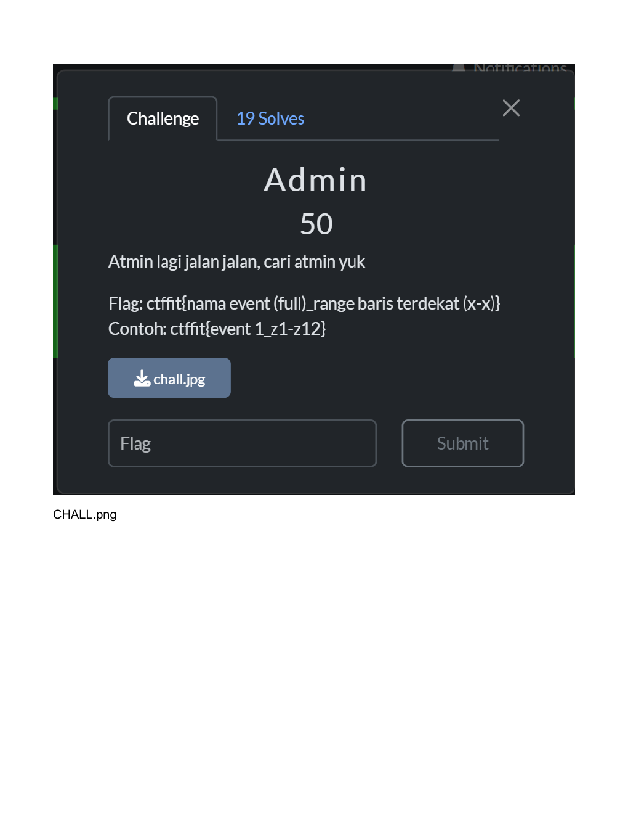
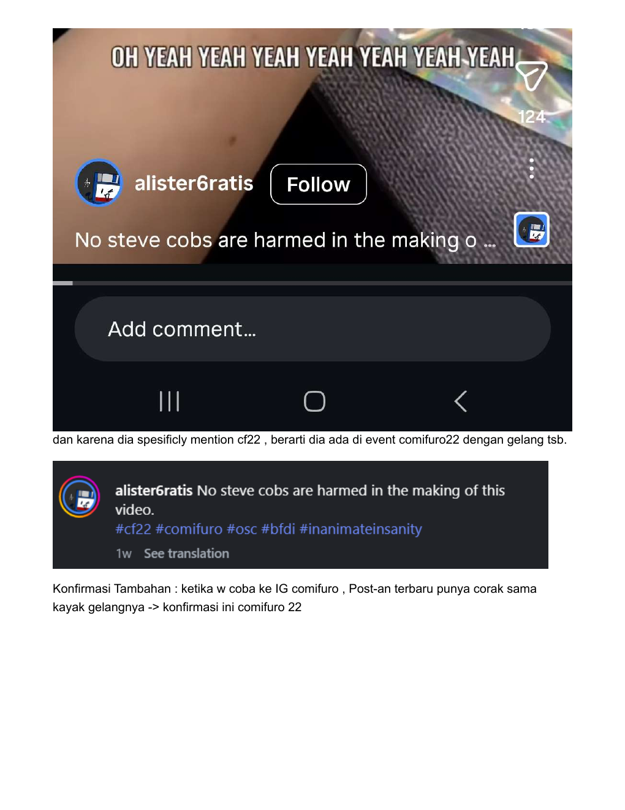
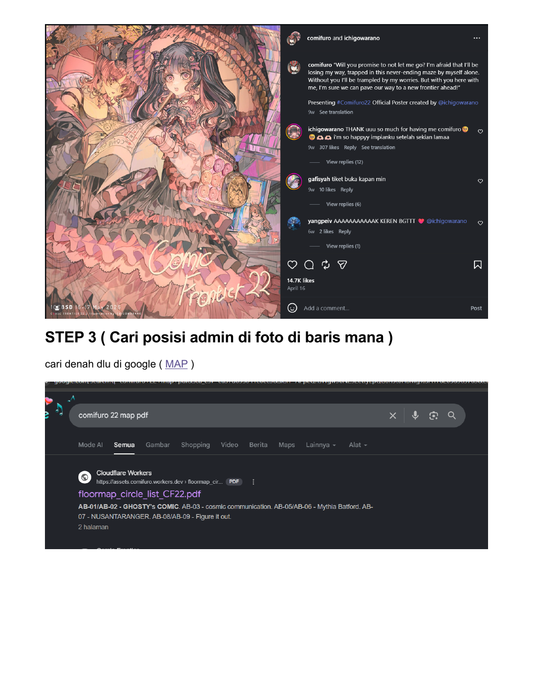
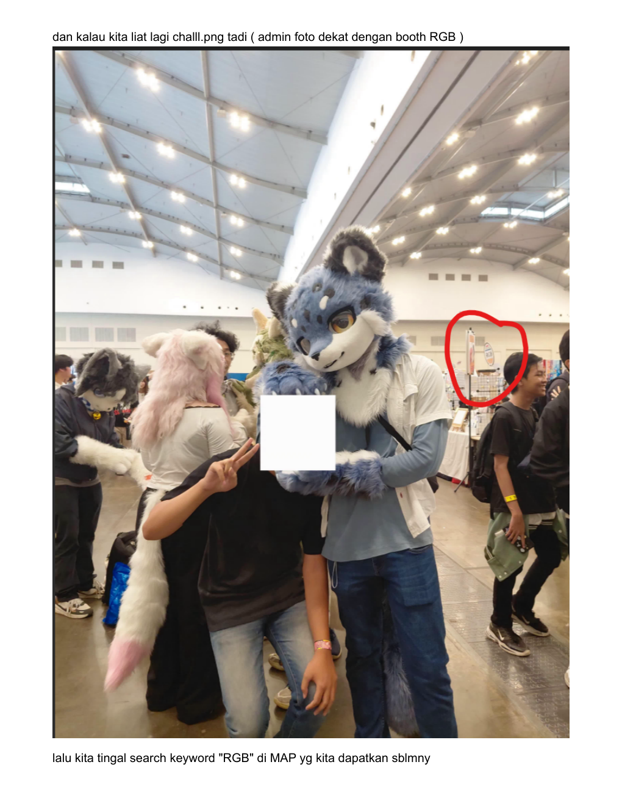
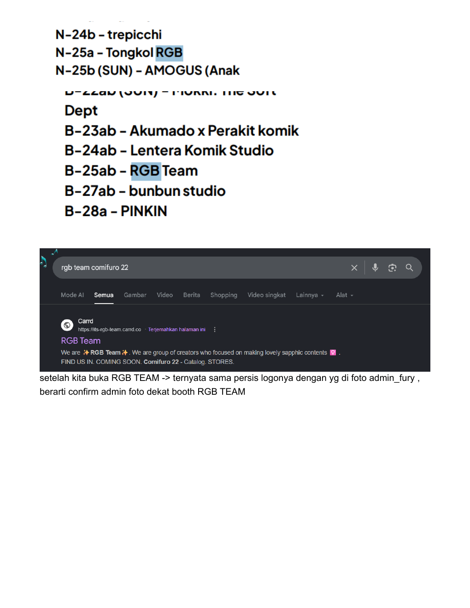
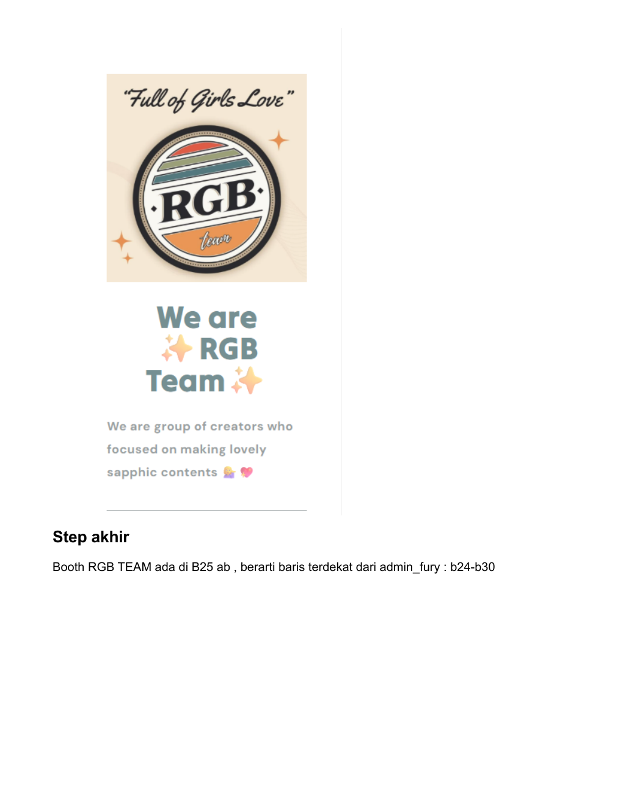
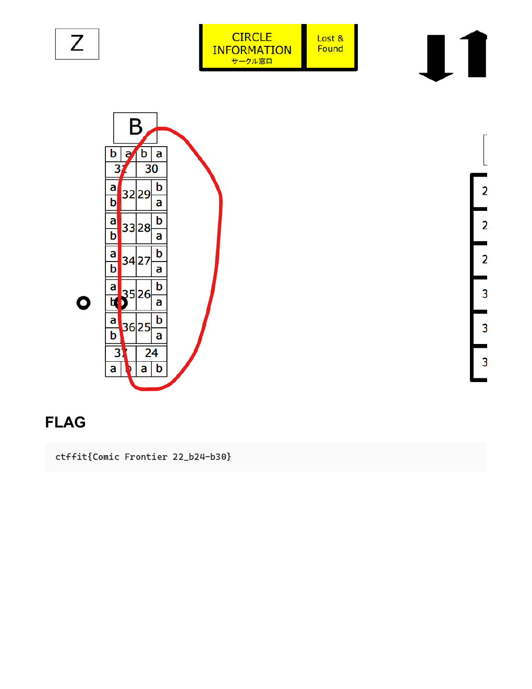

FIT Competition / OSINT
Admin Fury
Writeup singkat untuk challenge OSINT: identifikasi event dari clue visual, validasi event lewat gelang/postingan, lalu mapping posisi booth untuk dapetin range baris terdekat.
Challenge
Format flag meminta nama event full dan range baris terdekat. Clue utamanya ada di foto admin dan detail visual di sekitar event.

1. Identify Event
Langkah awal: cari nama event dari visual yang kelihatan. Dari clue yang ada, event mengarah ke Comifuro. Setelah itu, pembeda pentingnya adalah versi event yang dipakai.
Gelang event punya pola warna yang cukup unik, jadi gue cari post/reels dengan hashtag #comifuro dan nyari orang yang pakai gelang dengan corak sama.

#cf22, lalu dikonfirmasi lagi dengan post resmi Comifuro 22.2. Find The Map
Setelah event confirm sebagai Comic Frontier 22, next step adalah cari floor map. Query yang dipakai sederhana: comifuro 22 map pdf.

3. Match Booth Clue
Balik ke foto challenge, di background dekat admin ada booth dengan logo/teks yang bisa diarahkan ke RGB. Jadi di map yang sudah ditemukan, tinggal cari keyword RGB.


4. Derive The Range
Booth RGB Team ada di B-25ab. Dari posisi di map dan foto admin yang berada di area baris sekitar situ, range baris terdekat yang masuk adalah b24-b30.

Flag
ctffit{Comic Frontier 22_b24-b30}
